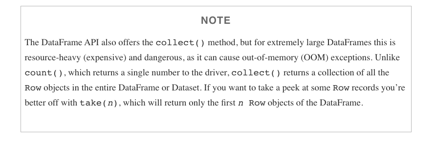

Lecture 8
Spark Machine Learning
Georgetown University
Fall 2024
Looking Back
- Intro to Hadoop and MapReduce
- Hadoop Streaming
- Dask
- Spark RDDs, DataFrames, SparkSQL
Future
- Spark NLP
- DataBricks on Azure
- Spark Streaming
Today
Review of Distributed Hardware and Spark RDDs
Spark ML
Project Introduction
Lab:
- Practicing data cleaning with Spark DataFrames
- Using Spark ML
Quiz on Hadoop Streaming and HDFS (due Friday October 14)
Essential Prior Topics
AWS Academy
Credit limit - $100
Course numbers:
- Course #1 - 24178
- Course #2 - 27354
- Course #3 - 22802
- Course #4 - 26418
STAY WITH COURSE 24178 UNLESS YOU HAVE RUN OUT OF CREDITS OR >$90 USED!
Note that you will have to repeat several setup steps:
- security group
- EC2 keypair uploading (the AWS part only)
- sagemaker setup
- any S3 uploading or copying as well as bucket creation as necessary
- EMR configuration
Grades
You are responsible for your grades
If there is a problem, you need to bring it up
All assignments are mandatory
State of assignments from syllabus
Group Project: 30%
HW Assignments: 45%
Lab Deliverables: 15% - Halfway through
Quizzes: 10% - One to two more
Review of File Systems
What are the possible file system options for each item: S3, HDFS, Local file system
hadoop jar /usr/lib/hadoop/hadoop-streaming.jar #1
-files basic-mapper.py,basic-reducer.py #2
-input /user/hadoop/in_data #3
-output /user/hadoop/in_data #3
-mapper basic-mapper.py #4
-reducer basic-reducer.py #4
- Local file system
- Local file system or S3
- HDFS or S3
- HDFS - why??
Spark: a Unified Engine
Connected and extensible

Caching and Persistence
By default, RDDs are recomputed every time you run an action on them. This can be expensive (in time) if you need to use a dataset more than once.
Spark allows you to control what is cached in memory.
To tell spark to cache an object in memory, use persist() or cache():
cache():is a shortcut for using default storage level, which is memory onlypersist():can be customized to other ways to persist data (including both memory and/or disk)
Review of PySparkSQL Cheatsheet
https://s3.amazonaws.com/assets.datacamp.com/blog_assets/PySpark_SQL_Cheat_Sheet_Python.pdf
collect CAUTION

Spark Diagnostic UI
Understanding how the cluster is running your job
Spark Application UI shows important facts about you Spark job:
- Event timeline for each stage of your work
- Directed acyclical graph (DAG) of your job
- Spark job history
- Status of Spark executors
- Physical / logical plans for any SQL queries
Tool to confirm you are getting the horizontal scaling that you need!
Adapted from AWS Glue Spark UI docs and Spark UI docs
Spark UI - Event timeline

Spark UI - DAG

Spark UI - Job History

Spark UI - Executors

Spark UI - SQL

PySpark User Defined Functions
UDF Workflow
Adapted from UDFs in Spark
UDF Example
Problem: make a new column with ages for adults-only
+-------+--------------+
|room_id| guests_ages|
+-------+--------------+
| 1| [18, 19, 17]|
| 2| [25, 27, 5]|
| 3|[34, 38, 8, 7]|
+-------+--------------+UDF Code Solution
from pyspark.sql.functions import udf, col
@udf("array<integer>")
def filter_adults(elements):
return list(filter(lambda x: x >= 18, elements))
# alternatively
from pyspark.sql.types IntegerType, ArrayType
@udf(returnType=ArrayType(IntegerType()))
def filter_adults(elements):
return list(filter(lambda x: x >= 18, elements))+-------+----------------+------------+
|room_id| guests_ages | adults_ages|
+-------+----------------+------------+
| 1 | [18, 19, 17] | [18, 19]|
| 2 | [25, 27, 5] | [25, 27]|
| 3 | [34, 38, 8, 7] | [34, 38]|
| 4 |[56, 49, 18, 17]|[56, 49, 18]|
+-------+----------------+------------+Alternative to Spark UDF
UDF Speed Comparison

Costs:
- Serialization/deserialization (think pickle files)
- Data movement between JVM and Python
- Less Spark optimization possible
Other ways to make your Spark jobs faster source:
- Cache/persist your data into memory
- Using Spark DataFrames over Spark RDDs
- Using Spark SQL functions before jumping into UDFs
- Save to serialized data formats like Parquet
Pandas UDF
From PySpark docs - Pandas UDFs are user defined functions that are executed by Spark using Arrow to transfer data and Pandas to work with the data, which allows vectorized operations. A Pandas UDF is defined using the pandas_udf as a decorator or to wrap the function, and no additional configuration is required. A Pandas UDF behaves as a regular PySpark function API in general.
@pandas_udf("first string, last string")
def split_expand(s: pd.Series) -> pd.DataFrame:
return s.str.split(expand=True)
df = spark.createDataFrame([("John Doe",)], ("name",))
df.select(split_expand("name")).show()
+------------------+
|split_expand(name)|
+------------------+
| [John, Doe]|
+------------------+https://spark.apache.org/docs/3.1.2/api/python/reference/api/pyspark.sql.functions.pandas_udf.html
Assumption: knowledge of ML techniques and process
Overview of ML

The advanced analytics/ML process
Gather and collect data
Clean and inspect data
Perform feature engineering
Split data into train/test
Evaluate and compare models
ML with Spark
What is MLlib
Capabilities
- Gather and clean data
- Perform feature engineering
- Perform feature selection
- Train and tune models
- Put models in production
API is divided into two packages
org.apache.spark.ml (High level API) - Provides higher level API built on top of DataFrames - Allows the construction of ML pipelines
org.apache.spark.mllib (Predates DataFrames) - Original API built on top of RDDs
Inspired by scikit-learn
DataFrameTransformerEstimatorPipelineParameter
Transformers, esimators, and pipelines

Transformers
Transformers take DataFrames as input, and return a new DataFrame as output. Transformers do not learn any parameters from the data, they simply apply rule-based transformations to either prepare data for model training or generate predictions using a trained model.
Transformers are run using the .transform() method

Some Examples of Transformers
- Converting categorical variables to numeric (must do this)
StringIndexerOneHotEncodercan act on multiple columns at a time
- Data Normalization
NormalizerStandardScaler
- String Operations
TokenizerStopWordsRemoverPCA
- Converting continuous to discrete
BucketizerQuantileDiscretizer
- Many more
- Spark 2.4.7: http://spark.apache.org/docs/2.4.7/ml-guide.html
- Spark 3.1.1: http://spark.apache.org/docs/3.1.1/ml-guide.html
MLlib algorithms for machine learning models need single, numeric features column as input
Each row in this column contains a vector of data points corresponding to the set of features used for prediction.
Use the
VectorAssemblertransformer to create a single vector column from a list of columns.All categorical data needs to be numeric for machine learning
# Example from Spark docs
from pyspark.ml.linalg import Vectors
from pyspark.ml.feature import VectorAssembler
dataset = spark.createDataFrame(
[(0, 18, 1.0, Vectors.dense([0.0, 10.0, 0.5]), 1.0)],
["id", "hour", "mobile", "userFeatures", "clicked"])
assembler = VectorAssembler(
inputCols=["hour", "mobile", "userFeatures"],
outputCol="features")
output = assembler.transform(dataset)
print("Assembled columns 'hour', 'mobile', 'userFeatures' to vector column 'features'")
output.select("features", "clicked").show(truncate=False)Estimators
Estimators learn (or “fit”) parameters from your DataFrame via the .fit() method, and return a model which is a Transformer

Pipelines

Pipelines
Pipelines combine multiple steps into a single workflow that can be easily run. * Data cleaning and feature processing via transformers, using stages * Model definition * Run the pipeline to do all transformations and fit the model
The Pipeline constructor takes an array of pipeline stages

Why Pipelines?
Cleaner Code: Accounting for data at each step of preprocessing can get messy. With a Pipeline, you won’t need to manually keep track of your training and validation data at each step.
Fewer Bugs: There are fewer opportunities to misapply a step or forget a preprocessing step.
Easier to Productionize: It can be surprisingly hard to transition a model from a prototype to something deployable at scale, but Pipelines can help.
More Options for Model Validation: We can easily apply cross-validation and other techniques to our Pipelines.
Example
Using the HMP Dataset. The structure of the dataset looks like this:
Let’s transform strings to numbers
- The
StringIndexeris an estimator having bothfitandtransformmethods. - To create a StringIndexer object (indexer), pass the
classcolumn as inputCol, andclassIndexas outputCol. - Then we fit the DataFrame to the indexer (to run the estimator), and transform the DataFrame. This creates a brand new DataFrame (indexed), which we can see below, containing the classIndex additional column.
from pyspark.ml.feature import StringIndexer
indexer = StringIndexer(inputCol = 'class', outputCol = 'classIndex')
indexed = indexer.fit(df).transform(df) # This is a new data frame
# Let's see it
indexed.show(5)
+---+---+---+-----------+--------------------+----------+
| x| y| z| class| source|classIndex|
+---+---+---+-----------+--------------------+----------+
| 29| 39| 51|Drink_glass|Accelerometer-201...| 2.0|
| 29| 39| 51|Drink_glass|Accelerometer-201...| 2.0|
| 28| 38| 52|Drink_glass|Accelerometer-201...| 2.0|
| 29| 37| 51|Drink_glass|Accelerometer-201...| 2.0|
| 30| 38| 52|Drink_glass|Accelerometer-201...| 2.0|
+---+---+---+-----------+--------------------+----------+
only showing top 5 rowsOne-Hot Encode categorical variables
- Unlike the
StringIndexer,OneHotEncoderis a pure transformer, having only thetransformmethod. It uses the same syntax ofinputColandoutputCol. OneHotEncodercreates a brand new DataFrame (encoded), with acategory_veccolumn added to the previous DataFrame(indexed).OneHotEncoderdoesn’t return several columns containing only zeros and ones; it returns a sparse-vector as seen in the categoryVec column. Thus, for the ‘Drink_glass’ class above, SparkML returns a sparse-vector that basically says there are 13 elements, and at position 2, the class value exists(1.0).
from pyspark.ml.feature import OneHotEncoder
# The OneHotEncoder is a pure transformer object. it does not use the fit()
encoder = OneHotEncoder(inputCol = 'classIndex', outputCol = 'categoryVec')
encoded = encoder.transform(indexed) # This is a new data frame
encoded.show(5, False)
+---+---+---+-----------+----------------------------------------------------+----------+--------------+
|x |y |z |class |source |classIndex|categoryVec |
+---+---+---+-----------+----------------------------------------------------+----------+--------------+
|29 |39 |51 |Drink_glass|Accelerometer-2011-06-01-14-13-57-drink_glass-f1.txt|2.0 |(13,[2],[1.0])|
|29 |39 |51 |Drink_glass|Accelerometer-2011-06-01-14-13-57-drink_glass-f1.txt|2.0 |(13,[2],[1.0])|
|28 |38 |52 |Drink_glass|Accelerometer-2011-06-01-14-13-57-drink_glass-f1.txt|2.0 |(13,[2],[1.0])|
|29 |37 |51 |Drink_glass|Accelerometer-2011-06-01-14-13-57-drink_glass-f1.txt|2.0 |(13,[2],[1.0])|
|30 |38 |52 |Drink_glass|Accelerometer-2011-06-01-14-13-57-drink_glass-f1.txt|2.0 |(13,[2],[1.0])|
+---+---+---+-----------+----------------------------------------------------+----------+--------------+
only showing top 5 rowsAssembling the feature vector
- The
VectorAssemblerobject gets initialized with the same syntax asStringIndexerandOneHotEncoder. - The list
['x', 'y', 'z']is paseed toinputCols, and we specify outputCol = ‘features’. - This is also a pure transformer.
from pyspark.ml.linalg import Vectors
from pyspark.ml.feature import VectorAssembler
# VectorAssembler creates vectors from ordinary data types for us
vectorAssembler = VectorAssembler(inputCols = ['x','y','z'], outputCol = 'features')
# Now we use the vectorAssembler object to transform our last updated dataframe
features_vectorized = vectorAssembler.transform(encoded) # note this is a new df
features_vectorized.show(5, False)
+---+---+---+-----------+----------------------------------------------------+----------+--------------+----------------+
|x |y |z |class |source |classIndex|categoryVec |features |
+---+---+---+-----------+----------------------------------------------------+----------+--------------+----------------+
|29 |39 |51 |Drink_glass|Accelerometer-2011-06-01-14-13-57-drink_glass-f1.txt|2.0 |(13,[2],[1.0])|[29.0,39.0,51.0]|
|29 |39 |51 |Drink_glass|Accelerometer-2011-06-01-14-13-57-drink_glass-f1.txt|2.0 |(13,[2],[1.0])|[29.0,39.0,51.0]|
|28 |38 |52 |Drink_glass|Accelerometer-2011-06-01-14-13-57-drink_glass-f1.txt|2.0 |(13,[2],[1.0])|[28.0,38.0,52.0]|
|29 |37 |51 |Drink_glass|Accelerometer-2011-06-01-14-13-57-drink_glass-f1.txt|2.0 |(13,[2],[1.0])|[29.0,37.0,51.0]|
|30 |38 |52 |Drink_glass|Accelerometer-2011-06-01-14-13-57-drink_glass-f1.txt|2.0 |(13,[2],[1.0])|[30.0,38.0,52.0]|
+---+---+---+-----------+----------------------------------------------------+----------+--------------+----------------+
only showing top 5 rowsNormalizing the dataset
Normalizerlike all transformers have consistent syntax. Looking at theNormalizerobject, it contains the parameterp=1.0(the default norm value for Pyspark Normalizer isp=2.0.)p=1.0uses Manhattan Distancep=2.0uses Euclidean Distance
from pyspark.ml.feature import Normalizer
normalizer = Normalizer(inputCol = 'features', outputCol = 'features_norm', p=1.0) # Manhattan Distance
normalized_data = normalizer.transform(features_vectorized) # New data frame too.
normalized_data.show(5)
>>
+---+---+---+-----------+--------------------+----------+--------------+----------------+--------------------+
| x| y| z| class| source|classIndex| categoryVec| features| features_norm|
+---+---+---+-----------+--------------------+----------+--------------+----------------+--------------------+
| 29| 39| 51|Drink_glass|Accelerometer-201...| 2.0|(13,[2],[1.0])|[29.0,39.0,51.0]|[0.24369747899159...|
| 29| 39| 51|Drink_glass|Accelerometer-201...| 2.0|(13,[2],[1.0])|[29.0,39.0,51.0]|[0.24369747899159...|
| 28| 38| 52|Drink_glass|Accelerometer-201...| 2.0|(13,[2],[1.0])|[28.0,38.0,52.0]|[0.23728813559322...|
| 29| 37| 51|Drink_glass|Accelerometer-201...| 2.0|(13,[2],[1.0])|[29.0,37.0,51.0]|[0.24786324786324...|
| 30| 38| 52|Drink_glass|Accelerometer-201...| 2.0|(13,[2],[1.0])|[30.0,38.0,52.0]|[0.25,0.316666666...|
+---+---+---+-----------+--------------------+----------+--------------+----------------+--------------------+
only showing top 5 rowsRunning the transformation Pipeline
The Pipeline constructor below takes an array of Pipeline stages we pass to it. Here we pass the 4 stages defined earlier, in the right sequence, one after another.
Now the Pipeline object fit to our original DataFrame df
Finally, we transform our DataFrame df using the Pipeline Object.
pipelined_data = data_model.transform(df)
pipelined_data.show(5)
+---+---+---+-----------+--------------------+----------+--------------+----------------+--------------------+
| x| y| z| class| source|classIndex| categoryVec| features| features_norm|
+---+---+---+-----------+--------------------+----------+--------------+----------------+--------------------+
| 29| 39| 51|Drink_glass|Accelerometer-201...| 2.0|(13,[2],[1.0])|[29.0,39.0,51.0]|[0.24369747899159...|
| 29| 39| 51|Drink_glass|Accelerometer-201...| 2.0|(13,[2],[1.0])|[29.0,39.0,51.0]|[0.24369747899159...|
| 28| 38| 52|Drink_glass|Accelerometer-201...| 2.0|(13,[2],[1.0])|[28.0,38.0,52.0]|[0.23728813559322...|
| 29| 37| 51|Drink_glass|Accelerometer-201...| 2.0|(13,[2],[1.0])|[29.0,37.0,51.0]|[0.24786324786324...|
| 30| 38| 52|Drink_glass|Accelerometer-201...| 2.0|(13,[2],[1.0])|[30.0,38.0,52.0]|[0.25,0.316666666...|
+---+---+---+-----------+--------------------+----------+--------------+----------------+--------------------+
only showing top 5 rowsOne last step before training
# first let's list out the columns we want to drop
cols_to_drop = ['x','y','z','class','source','classIndex','features']
# Next let's use a list comprehension with conditionals to select cols we need
selected_cols = [col for col in pipelined_data.columns if col not in cols_to_drop]
# Let's define a new train_df with only the categoryVec and features_norm cols
df_train = pipelined_data.select(selected_cols)
# Let's see our training dataframe.
df_train.show(5)
+--------------+--------------------+
| categoryVec| features_norm|
+--------------+--------------------+
|(13,[2],[1.0])|[0.24369747899159...|
|(13,[2],[1.0])|[0.24369747899159...|
|(13,[2],[1.0])|[0.23728813559322...|
|(13,[2],[1.0])|[0.24786324786324...|
|(13,[2],[1.0])|[0.25,0.316666666...|
only showing top 5 rowsYou now have a DataFrame optimized for SparkML!
Machine Learning Models in Spark
There are many Spark machine learning models
Regression
Linear regression - what is the optimization method?
Survival regression
Genearlized linear model (GLM)
Random forest regression
Classification
- Logistic regression
- Gradient-boosted tree model (GBM)
- Naive Bayes
- Multilayer perception (neural network!)
Other
- Clustering (K-means, LDA, GMM)
- Association rule mining
Building your Model
Feature selection using easy R-like formulas
# Example from Spark docs
from pyspark.ml.feature import RFormula
dataset = spark.createDataFrame(
[(7, "US", 18, 1.0),
(8, "CA", 12, 0.0),
(9, "NZ", 15, 0.0)],
["id", "country", "hour", "clicked"])
formula = RFormula(
formula="clicked ~ country + hour",
featuresCol="features",
labelCol="label")
output = formula.fit(dataset).transform(dataset)
output.select("features", "label").show()What if you have too many columns for your model?
Evaluating 1,000s or 10,000s of variables?
Chi-Squared Selector
Pick categorical variables that are most dependent on the response variable
Can even check the p-values of specific variables!
# Example from Spark docs
from pyspark.ml.feature import ChiSqSelector
from pyspark.ml.linalg import Vectors
df = spark.createDataFrame([
(7, Vectors.dense([0.0, 0.0, 18.0, 1.0]), 1.0,),
(8, Vectors.dense([0.0, 1.0, 12.0, 0.0]), 0.0,),
(9, Vectors.dense([1.0, 0.0, 15.0, 0.1]), 0.0,)], ["id", "features", "clicked"])
selector = ChiSqSelector(numTopFeatures=1, featuresCol="features",
outputCol="selectedFeatures", labelCol="clicked")
result = selector.fit(df).transform(df)
print("ChiSqSelector output with top %d features selected" % selector.getNumTopFeatures())
result.show()Tuning your model
Part 1
# Example from Spark docs
from pyspark.ml.evaluation import RegressionEvaluator
from pyspark.ml.regression import LinearRegression
from pyspark.ml.tuning import ParamGridBuilder, TrainValidationSplit
# Prepare training and test data.
data = spark.read.format("libsvm")\
.load("data/mllib/sample_linear_regression_data.txt")
train, test = data.randomSplit([0.9, 0.1], seed=12345)
lr = LinearRegression(maxIter=10)
# We use a ParamGridBuilder to construct a grid of parameters to search over.
# TrainValidationSplit will try all combinations of values and determine best model using
# the evaluator.
paramGrid = ParamGridBuilder()\
.addGrid(lr.regParam, [0.1, 0.01]) \
.addGrid(lr.fitIntercept, [False, True])\
.addGrid(lr.elasticNetParam, [0.0, 0.5, 1.0])\
.build()Tuning your model
Part 2
# In this case the estimator is simply the linear regression.
# A TrainValidationSplit requires an Estimator, a set of Estimator ParamMaps, and an Evaluator.
tvs = TrainValidationSplit(estimator=lr,
estimatorParamMaps=paramGrid,
evaluator=RegressionEvaluator(),
# 80% of the data will be used for training, 20% for validation.
trainRatio=0.8)
# Run TrainValidationSplit, and choose the best set of parameters.
model = tvs.fit(train)
# Make predictions on test data. model is the model with combination of parameters
# that performed best.
model.transform(test)\
.select("features", "label", "prediction")\
.show()